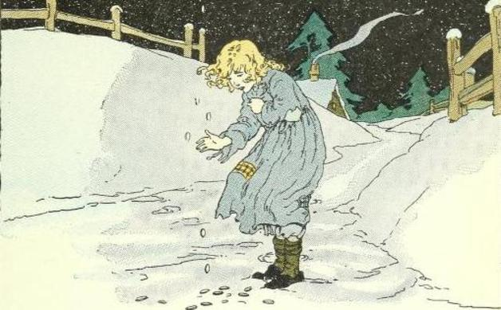

The stolen farthings

A father was one day sitting at dinner with his wife and his children,
and a good friend who had come on a visit was with them.
And as they thus sat, and it was striking twelve o'clock,
the stranger saw the door open, and a very pale child dressed in snow-white clothes came in.
It did not look around,
and it did not speak; but went straight into the next room. Soon afterwards it came back,
and went out at the door again in the same quiet manner.
On the second and on the third day, it came also exactly in the same way.
At last the stranger asked the father to whom the beautiful child
that went into the next room every day at noon belonged?
"I have never seen it," said he, neither did he know to whom it could belong.
The next day when it again came, the stranger pointed it out to the father,
who however did not see it, and the mother and the children also all saw nothing.
On this the stranger got up, went to the room door,
opened it a little, and peeped in. Then he saw the child sitting on the ground,
and digging and seeking about industriously amongst
the crevices between the boards of the floor, but when it saw the stranger,
it disappeared. He now told what he had seen and described the child exactly,
and the mother recognized it, and said,"Ah, it is my dear child who died a month ago."
They took up the boards and found two farthings which
the child had once received from its mother that it might
give them to a poor man; it, however, had thought,
"Thou canst buy thyself a biscuit for that," and had kept the farthings,
and hidden them in the openings between the boards;
and therefore it had had no rest in its grave,
and had come every day at noon to seek for these farthings.
The parents gave the money at once to a poor man,
and after that the child was never seen again.